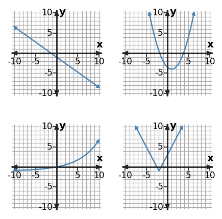

1. Use the table to choose a function family and write one matching equation.
| $x$ | -2 | -1 | 0 | 1 | 2 |
|---|---|---|---|---|---|
| $y$ | 5 | 2 | 1 | 2 | 5 |
2. Two models fit early data: a linear model adds 60 each period; an exponential model grows 10% each period. What additional evidence would best help choose between them?
3. A table has outputs [2, 6, 10, 14] for consecutive integer inputs, while a proposed equation is $y=3(1.5)^x$. Explain the conflict and identify what should be rechecked.
4. A delivery model is $C(d)=12+3d$. Actual costs for $d=0,1,2,3$ are 12, 16, 18, and 22. Use the equation and data to judge whether the model is exact or approximate.
5. A problem asks for symmetry, zeros, and a domain restriction. Propose an efficient order for using graph, equation, table, and/or context representations.
6. For $y=4|x-1|-5$, create three table values centered at the vertex and explain what the table reveals about symmetry.
7. A quantity is multiplied by 0.5 every 2 days from an initial value of 80. Choose a function family, write a model, and predict the value after 6 days.
8. When deciding between quadratic and exponential, name one useful piece of evidence you could collect from each of an equation, graph, table, and context before making a final conclusion.
9. The panel shows linear, quadratic, exponential, and absolute-value graphs. Choose two panels and explain one feature that distinguishes their families.

10. You need to compare several exact listed outputs at consecutive inputs. Which representation is usually the most direct starting point?
11. Use the table to choose a function family and write one matching equation.
| $x$ | -2 | -1 | 0 | 1 | 2 |
|---|---|---|---|---|---|
| $y$ | 4 | 2 | 0 | 2 | 4 |
12. A linear and a quadratic model are both close to the first three data values. What additional evidence would best support a final choice?
13. A table has outputs [7, 12, 17, 22] for consecutive integer inputs, while a proposed equation is $y=6(1.3)^x$. Explain the conflict and identify what should be rechecked.
14. A distance model is $D(x)=5|x-2|+1$. Observed values at $x=0,1,2,3,4$ are 10.8, 6.1, 1.0, 5.9, and 11.2. Use the model and data to judge whether the fit is exact or approximate.
15. A problem involves distance from a target and asks for the minimum distance and outputs on both sides of the target. Propose an efficient representation pathway.
16. For $y=2|x+1|+5$, create three table values centered at the vertex and explain what the table reveals about symmetry. State the line of symmetry.
17. A quantity halves every 3 hours from an initial value of 160. Choose a function family, write a model, and predict the value after 6 hours.
18. You are checking an absolute-value or piecewise model. Name one useful check from the rule, graph, table, and context.
19. A table has $y=2$ at $x=0$, $y=6$ at $x=1$, and $y=18$ at $x=2$. Write an exponential equation.
20. A value starts at 60 and increases by 5% each period. Write an exponential model.
21. An exponential graph has y-intercept 3 and is multiplied by 4 for every 1-unit increase in x. Write one matching equation.
22. Solve $4x^2+2x-1=0$ with the quadratic formula.
23. A model reaches ground level when $-3t^2+14t+2=0$. Use the quadratic formula and identify the nonnegative solution as the meaningful time.
24. Without fully solving, use the discriminant to predict the number of real solutions of $2x^2-x-3=0$.